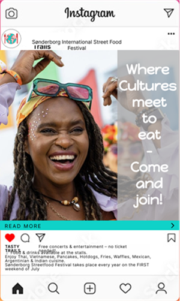
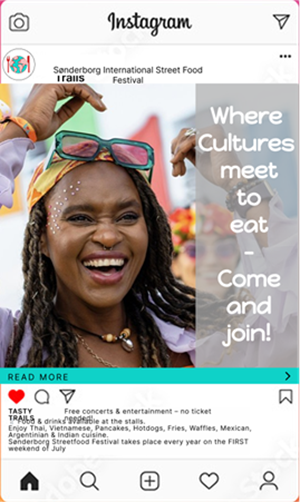

Case: Sønderborg International Street Food Festival
En festival med madboder fra mange lande, arrangeret i Sønderborg.
Festivalen fejrer mangfoldighed gennem mad, kultur, musik og fællesskab. Studerende, lokale,
internationaleborgere inviteres til at smage, opleve og delekultur gennem madoplevelser.
Om projektet
Vores projekt samler alt det, vi har lært om visuel kommunikation fra:
- grafiske principper
- farver
- typografi til branding
- budskab og målrettet indholdsproduktion
Vi har udviklet en plakat, en flyer, en landingside og et opslag til sociale medier, som tilsammen udtrykker vores brand og visuelle identitet.
På vores FigJam-board viser vi både processen og de færdige resultater.
Boardet fungerer som en udstilling, hvor man kan følge vores arbejde og se, hvordan vores designvalg hænger sammen.
Undervejs har vi arbejdet iterativt med feedback og lagt vægt på at skabe et klart og sammenhængende visuelt udtryk, der understøtter vores budskab.
Vores problemstilling
Hvordan kan vi gennem en tydelig og konsistent visuel identitet skabe et brand, der formidler vores budskab effektivt på tværs af forskellige medier?
Proces – fra idé til design
- I starten af projektet arbejdede vi med at udvikle
vores overordnede idé og koncept.
Vi samlede inspiration gennem moodboards,
farveprøver og typografivalg for at finde et
visuelt udtryk, der passede til vores brand og tema.
Her handlede det især om at skabe en identitet,
der kunne kommunikere vores budskab klart og
visuelt sammenhængende. - Derefter begyndte vi at udarbejde de første skitser og low fidelity-designs.
Her testede vi forskellige kompositioner, layoutmuligheder
og farver, mens vi justerede udtrykket ud fra vores fælles feedback.
De tidlige prototyper hjalp os med at finde frem til, hvad der fungerede visuelt – og
hvad der skulle ændres. - Efterfølgende gik vi videre til high fidelity-designs, hvor vi finpudsede detaljerne og
arbejdede mere målrettet med typografi, hierarki og balance. Undervejs fik vi feedback,
som vi brugte til at forbedre vores løsninger og skabe et mere professionelt og
sammenhængende udtryk.


 

Færdige produkter
Til sidst stod vi med vores færdige produkter: plakat, flyer, landingside og SoMe-post.
De fire elementer viser tydeligt vores brand og visuelle identitet og formidler vores budskab
på tværs af platforme.

Efter projektet valgte jeg at arbejde videre selv med landingsiden. Jeg syntes, farverne kunne
forstærkes for at skabe en varmere og mere appetitlig stemning, som passede bedre til temaet
om streetfood. Derfor justerede jeg farvepaletten, så designet fik et mere levende og
indbydende udtryk, der efter min mening rammer stemningen bedre.